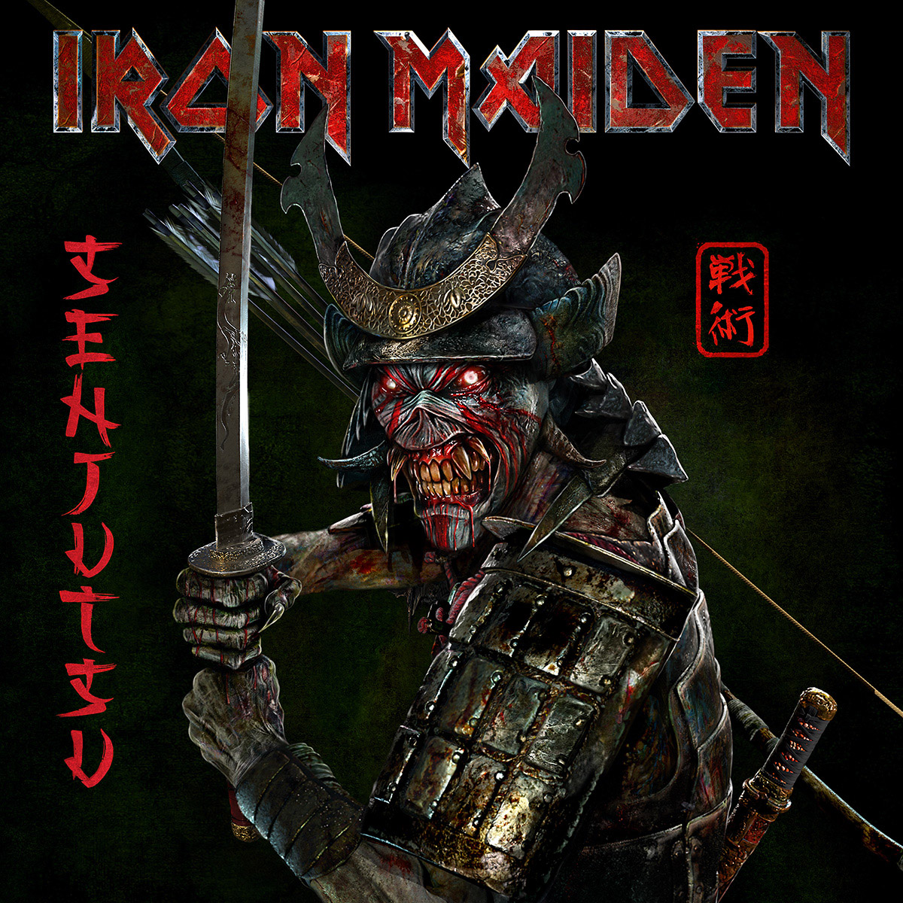

Senjutsu
Veja aqui detalhes sobre esse álbum da maior banda de heavy metal do mundo

Lançado em 4 de setembro de 2021, Senjutsu marcou o retorno triunfal do Iron Maiden após seis anos de espera. Gravado em 2019 o álbum foi estrategicamente adiado devido à pandemia, criando uma expectativa sem precedentes entre os fãs. Com seus 82 minutos divididos em dois discos, Senjutsu se tornou não apenas o segundo álbum mais longo da carreira da banda, mas também uma prova vívida de sua capacidade de inovar após mais de quatro décadas de estrada.
A essência de Senjutsu reside em sua ousadia criativa. O álbum mergulha em atmosferas épicas e progressivas, com cinco faixas ultrapassando os oito minutos de duração Musicalmente, a banda explorou territórios inéditos: Steve Harris experimentou com baixo fretless, enquanto os três guitarristas teceram harmonias complexas que remetem aos dias áureos dos anos 1980, porém com uma maturidade só alcançada após 40 anos de estrada.
O lançamento de Senjutsu foi acompanhado por inovações tecnológicas: o single "The Writing on the Wall" estreou com um videoclipe em motion comics, técnica nunca antes usada pela banda. O álbum alcançou o primeiro lugar em 23 países e recebeu certificação de ouro em cinco territórios em menos de 48 horas, provando que o Iron Maiden continua sendo uma força dominante no heavy metal mundial.
Nome: Senjutsu
Duração: 81:53 minutos
Lançamento: 4 de setembro de 2021
Destáques
The Writing on the Wall - Primeiro single com animação em motion comics , com solos bluesy de Smith/Murray.
Hell on Earth - Final épico com progressões harmônicas complexas , é considerada por fãs como uma das melhores do século XXI.
Days of Future Past - A "mais rápida" do álbum, lembra o estilo Piece of Mind.
"Estamos escrevendo para nós mesmos agora - se os fãs gostarem, é bônus" - Steve Harris
Músicas